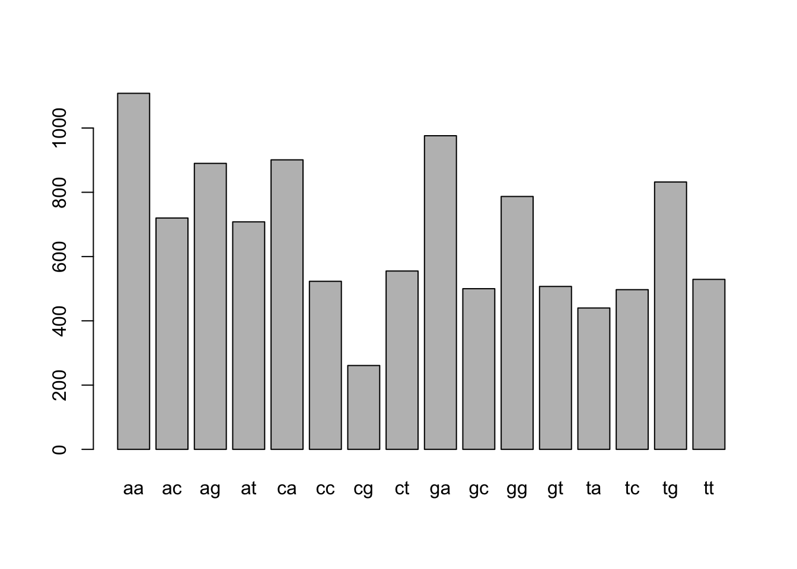

Chapter 21 Testing the significance of an alignment
library(compbio4all)
library(Biostrings)By: Avril Coghlan.
Pairwise Sequence Alignment
https://a-little-book-of-r-for-bioinformatics.readthedocs.io/en/latest/src/chapter4.html
Adapted, edited and expanded: Nathan Brouwer under the Creative Commons 3.0 Attribution License (CC BY 3.0).
21.1 Calculating the statistical significance of a pairwise global alignment
We have seen that when we align the ‘PAWHEAE’ and ‘HEAGAWGHEE’ protein sequences, they have some similarity, and the score for their optimal global alignment is -5.
But is this alignment statistically significant? In other words, is this alignment better than we would expect between any two random proteins?
The Needleman-Wunsch alignment algorithm will produce a global alignment even if we give it two unrelated random protein sequences, although the alignment score would be low.
Therefore, we should ask: is the score for our alignment better than expected between two random sequences of the same lengths and amino acid compositions?
It is reasonable to expect that if the alignment score is statistically significant, then it will be higher than the scores obtained from aligning pairs of random protein sequences that have the same lengths and amino acid compositions as our original two sequences.
Therefore, to assess if the score for our alignment between the “PAWHEAE” and “HEAGAWGHEE” protein sequence is statistically significant, a first step is to make some random sequences that have the same amino acid composition and length as one of our initial two sequences, for example, as the same amino acid composition and length as the sequence ‘PAWHEAE.’
How can we obtain random sequences of the same amino acid composition and length as the sequence ‘PAWHEAE?’ One way is to generate sequences using a multinomial model for protein sequences in which the probabilities of the different amino acids set to be equal to their frequencies in the sequence ‘PAWHEAE.’
That is, we can generate sequences using a multinomial model for proteins, in which the probability of “P” is set to 0.1428571 (1/7); the probability of “A” is set to 0.2857143 (2/7); the probability of “W” is set to 0.1428571 (1/7); the probability of "H’ is set to 0.1428571 (1/7); and the probabilty of ‘E’ is set to 0.2857143 (2/7), and the probabilities of the other 15 amino acids are set to 0.
To generate a sequence with this multinomial model, we choose the letter for each position in the sequence according to those probabilities. This is as if we have made a roulette wheel in which 1/7th of the circle is taken up by a pie labelled “P,” 2/7ths by a pie labelled “A,” 1/7th by a pie labelled “W,” 1/7th by a pie labelled “H,” and 2/7ths by a pie labelled “E”:
TODO add image
To generate a sequence using the multinomial model, we keep spinning the arrow in the centre of the roulette wheel, and write down the letter that the arrow stops on after each spin. To generate a sequence that is 7 letters long, we can spin the arrow 7 times. To generate 1000 sequences that are each 7 letters long, we can spin the arrow 7000 times, where the letters chosen form 1000 7-letter amino acid sequences.
To generate a certain number (eg.1000) random amino acid sequences of a certain length using a multinomial model, you can use the function generateSeqsWithMultinomialModel() below:
The function generateSeqsWithMultinomialModel() generates X random sequences with a multinomial model, where the probabilities of the different letters are set equal to their frequencies in an input sequence, which is passed to the function as a string of characters (eg. ‘PAWHEAE’).
The function returns X random sequences in the form of a vector which has X elements, the first element of the vector contains the first sequence, the second element contains the second sequence, and so on.
You will need to copy and paste this function into R before you can use it.
We can use this function to generate 1000 7-letter amino acid sequences using a multinomial model in which the probabilities of the letters are set equal to their frequencies in ‘PAWHEAE’ (ie. probabilities 1/7 for P, 2/7 for A, 1/7 for W, 1/7 for H and 2/7 for E), by typing:
randomseqs <- generateSeqsWithMultinomialModel('PAWHEAE',1000)
randomseqs[1:10] # Print out the first 10 random sequences## [1] "EHEAPWH" "EPPEEEE" "EHWPEAE" "AHWEAWE" "WEAEEWE" "HAPAAAP" "AEAEEWW"
## [8] "EHEWEAE" "AAHPWWW" "WEWWHEE"The 1000 random sequences are stored in a vector randomseqs that has 1000 elements, each of which contains one of the random sequences.
We can then use the Needleman-Wunsch algorithm to align the sequence ‘HEAGAWGHEE’ to one of the 1000 random sequences generated using the multinomial model with probabilities 1/7 for P, 2/7 for A, 1/7 for W, 1/7 for H and 2/7 for E.
For example, to align ‘HEAGAWGHEE’ to the first of the 1000 random sequences (‘EEHAAAE’), we type:
s4 <- "HEAGAWGHEE"Biostrings::pairwiseAlignment(s4, randomseqs[1],
substitutionMatrix = "BLOSUM50",
gapOpening = -2,
gapExtension = -8,
scoreOnly = FALSE)## Global PairwiseAlignmentsSingleSubject (1 of 1)
## pattern: -HEAGAWGHEE
## subject: EHEA-PW-H--
## score: -3If we use the pairwiseAlignment() function with the argument ‘scoreOnly=TRUE,’ it will just give us the score for the alignment:
pairwiseAlignment(s4, randomseqs[1], substitutionMatrix = "BLOSUM50", gapOpening = -2,
gapExtension = -8, scoreOnly = TRUE)## [1] -3If we repeat this 1000 times, that is, for each of the 1000 random sequences in vector randomseqs, we can get a distribution of alignment scores expected for aligning ‘HEAGAWGHEE’ to random sequences of the same length and (approximately the same) amino acid composition as ‘PAWHEAE.’
We can then compare the actual score for aligning ‘PAWHEAE’ to ‘HEAGAWGHEE’ (ie. -5) to the distribution of scores for aligning ‘HEAGAWGHEE’ to the random sequences.
The code above first uses the double() function to create a numeric vector randomscores for storing real numbers (ie. not integers), with 1000 elements. This will be used to store the alignment scores for 1000 alignments between ‘HEAGAWGHEE’ and the 1000 different random sequences generated using the multinomial model.
The ‘for loop’ takes each of the 1000 different random sequences, aligns each one to ‘HEAGAWGHEE,’ and stores the 1000 alignment scores in the randomscores vector.
randomscores <- double(1000) # Create a numeric vector with 1000 elements
for (i in 1:1000)
{
score <- Biostrings::pairwiseAlignment(s4, randomseqs[i], substitutionMatrix = "BLOSUM50",
gapOpening = -2, gapExtension = -8, scoreOnly = TRUE)
randomscores[i] <- score
}Once we have run the ‘for loop,’ we can make a histogram plot of the 1000 scores in vector randomscores by typing:
hist(randomscores, col="red") # Draw a red histogram
We can see from the histogram that quite a lot of the random sequences seem to have higher alignment scores than -5 when aligned to ‘HEAGAWGHEE’ (where -5 is the alignment score for ‘PAWHEAE’ and ‘HEAGAWGHEE’).
We can use the vector randomscores of scores for 1000 alignments of random sequences to ‘HEAGAWGHEE’ to calculate the probability of getting a score as large as the real alignment score for ‘PAWHEAE’ and ‘HEAGAWGHEE’ (ie. -5) by chance.
sum(randomscores >= -5)## [1] 283We see that 266 of the 1000 alignments of random sequences to ‘HEAGAWGHEE’ had alignment scores that were equal to or greater than -5. Thus, we can estimate that the probability of getting a score as large as the real alignment score by chance is (266/1000 =) 0.266. In other words, we can calculate a P-value of 0.266. This probability or P-value is quite high (almost 30%, or 1 in 3), so we can conclude that it is quite probable that we could get an alignment score as high as -5 by chance alone. This indicates that the sequences ‘HEAGAWGHEE’ and ‘PAWHEAE’ are not more similar than any two random sequences, and so they are probably not related sequences.
Another way of saying this is that the P-value that we calculated is high (0.266), and as a result we conclude that the alignment score for the sequences ‘HEAGAWGHEE’ and ‘PAWHEAE’ is not statistically significant. Generally, if the P-value that we calculate for an alignment of two sequences is >0.05, we conclude that the alignment score is not statistically significant, and that the sequences are probably not related. On the other hand, if the P-value is less than or equal to 0.05, we conclude that the alignment score is statistically significant, and the sequences are very probably related (homologous).
21.2 Summary
In this practical, you will have learned to use the following R functions:
data() for reading in data that comes with an R package double() for creating a numeric vector for storing real (non-integer) numbers toupper() for converting a string of characters from lowercase to uppercase All of these functions belong to the standard installation of R.
You have also learned the following R functions that belong to the bioinformatics packages:
nucleotideSubstitutionMatrix() in the Biostrings package for making a nucleotide scoring matrix pairwiseAlignment() in the Biostrings package for making a global alignment between two sequences c2s() in the SeqinR package for converting a sequence stored in a vector to a string of characters Links and Further Reading Some links are included here for further reading.
For background reading on sequence alignment, it is recommended to read Chapter 3 of Introduction to Computational Genomics: a case studies approach by Cristianini and Hahn (Cambridge University Press; www.computational-genomics.net/book/).
For more in-depth information and more examples on using the SeqinR package for sequence analysis, look at the SeqinR documentation, http://pbil.univ-lyon1.fr/software/seqinr/doc.php?lang=eng.
There is also a very nice chapter on “Analyzing Sequences,” which includes examples of using SeqinR and Biostrings for sequence analysis, as well as details on how to implement algorithms such as Needleman-Wunsch and Smith-Waterman in R yourself, in the book Applied statistics for bioinformatics using R by Krijnen (available online at cran.r-project.org/doc/contrib/Krijnen-IntroBioInfStatistics.pdf).
For a more in-depth introduction to R, a good online tutorial is available on the “Kickstarting R” website, cran.r-project.org/doc/contrib/Lemon-kickstart.
There is another nice (slightly more in-depth) tutorial to R available on the “Introduction to R” website, cran.r-project.org/doc/manuals/R-intro.html.
For more information on and examples using the Biostrings package, see the Biostrings documentation at http://www.bioconductor.org/packages/release/bioc/html/Biostrings.html.
Acknowledgements Many of the ideas for the examples and exercises for this practical were inspired by the Matlab case study on the Eyeless protein (www.computational-genomics.net/case_studies/eyeless_demo.html) from the website that accompanies the book Introduction to Computational Genomics: a case studies approach by Cristianini and Hahn (Cambridge University Press; www.computational-genomics.net/book/).
The examples of DNA sequences and protein sequences to align (‘GAATTC’ and ‘GATTA,’ and sequences ‘PAWHEAE’ and ‘HEAGAWGHEE’), as well as some ideas related to finding the statistical significance of a pairwise alignment, were inspired by the chapter on “Analyzing Sequences” in the book Applied statistics for bioinformatics using R by Krijnen (cran.r-project.org/doc/contrib/Krijnen-IntroBioInfStatistics.pdf).
Thank you to Jean Lobry and Simon Penel for helpful advice on using the SeqinR package.
Contact I will be grateful if you will send me (Avril Coghlan) corrections or suggestions for improvements to my email address alc@sanger.ac.uk
License The content in this book is licensed under a Creative Commons Attribution 3.0 License.
Exercises Answer the following questions, using the R package. For each question, please record your answer, and what you typed into R to get this answer.
Model answers to the exercises are given in Answers to the exercises on Sequence Alignment.
- Download FASTA-format files of the Brugia malayi Vab-3 protein (UniProt accession A8PZ80) and the Loa loa Vab-3 protein (UniProt accession E1FTG0) sequences from UniProt. Note: the vab-3 gene of Brugia malayi and the vab-3 gene of Loa loa are related genes that control eye development in these two species. Brugia malayi and Loa loa are both parasitic nematode worms, which both cause filariasis, which is classified by the WHO as a neglected tropical disease.
- What is the alignment score for the optimal global alignment between the Brugia malayi Vab-3 protein and the Loa loa Vab-3 protein, when you use the BLOSUM50 scoring matrix, a gap opening penalty of -10 and a gap extension penalty of -0.5? Note: to specify a gap opening penalty of -10 and a gap extension penalty of -0.5, set the “gapOpening” argument to -9.5, and the “gapExtension” penalty to -0.5 in the pairwiseAlignment() function.
- Use the printPairwiseAlignment() function to view the optimal global alignment between Brugia malayi Vab-3 protein and the Loa loa Vab-3 protein, using the BLOSUM50 scoring matrix, a gap opening penalty of -10 and a gap extension penalty of -0.5. Do you see any regions where the alignment is very good (lots of identities and few gaps)?
- What global alignment score do you get for the two Vab-3 proteins, when you use the BLOSUM62 alignment matrix, a gap opening penalty of -10 and a gap extension penalty of -0.5? Which scoring matrix do you think is more appropriate for using for this pair of proteins: BLOSUM50 or BLOSUM62?
- What is the statistical significance of the optimal global alignment for the Brugia malayi and Loa loa Vab-3 proteins made using the BLOSUM50 scoring matrix, with a gap opening penalty of -10 and a gap extension penalty of -0.5? In other words, what is the probability of getting a score as large as the real alignment score for Vab-3 by chance?
- What is the optimal global alignment score between the Brugia malayi Vab-6 protein and the Mycobacterium leprae chorismate lyase protein? Is the alignment score statistically significant (what is the P- value?)? Does this surprise you?